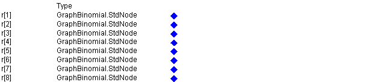
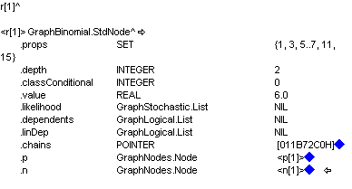
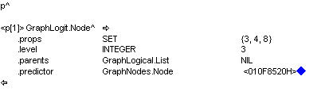
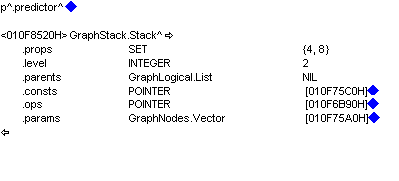
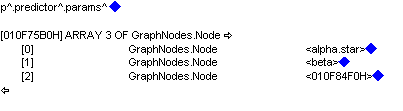
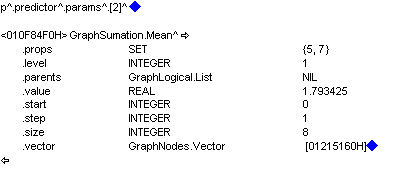
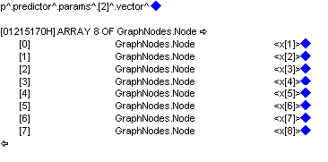

![[bluediamonds0]](bluediamonds0.bmp) Blue Diamonds
Blue Diamonds
I like blue diamonds, maybe you also like blue diamonds? Your version of OpenBUGS (WinBUGS to be more precise) can now have new improved blue diamonds. A modified version of the module DevDebug has been written. The Node Info tool will now give you blue diamonds so that you can explore Graph and Updater objects. The blue diamonds allow complex graphical model build by OpenBUGS to be explored in detail. Where possible hexidecimal numbers that represent nodes in the graph data structure are replaced by their name in the BUGS language model. All addresses that represent nodes in the graphical model are displayed between angled brakets (<>). Adding the DevDebug module to OpenBUGS will also give more informative trap messages when things go wrong.
As a simple example of blue diamonds in action compile and initialize the Beetles model. Then select the "Node info" tool from the Info menu and type r in the dialog box and click on the node button. You should see a window containing

Next click on the blue diamond opposite r[1] to get information about node r[1] in the Beetles model, you will get another window containing

The r[1] node has several field amongst them p[1] and n[1]. More information about p[1] can be gained by clicking on its blue diamond. You will get another window containing

So the p[1] is of type GraphLogit.Node, the logistic node. It has several fields including the predictor field which can be explored by clicking on its blue diamond. Doing this opens a window containg

So the predictor node is of type GraphStack.Stack. You can explore this furtuer by clicking on its blue diamonds. For example clicking on the diamond for the params will open a window containing

The params is a three component vector, the first two elements being alpha.star and beta nodes in the model. But what is the third element? Click on its blue diamond to find out

The third element of params is a GraphSumation.Mean type of node. But what does it calculate the mean of? Click the blue diamond after the vector to find out. You will get a final window containing
